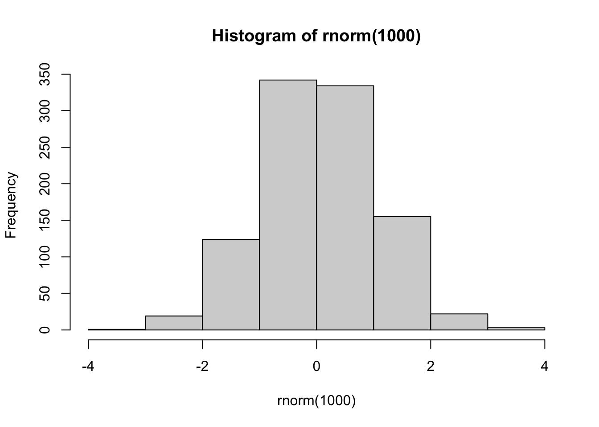

4.13 Outros tópicos
Nesta seção, apresentamos alguns tópicos extras. Alguns deles serão retomanos em capítulos posteriores.
4.13.1 Matrizes
As matrizes no R podem ser tratadas como vetores com duas dimensões. Por serem vetores, elas só podem conter elementos de uma mesma classe. Por possuírem duas dimensões, as operações de subsetting devem ser realizadas utilizando a sintaxe matriz[linha, coluna].
Para criar uma matriz, utilizamos a função matrix(). Precisamos definir quais elementos formarão a matriz e qual será o número de linhas e colunas.
# Uma matriz de 2 linhas e 3 colunas
m <- matrix(1:9, nrow = 3, ncol = 3)
m
## [,1] [,2] [,3]
## [1,] 1 4 7
## [2,] 2 5 8
## [3,] 3 6 9
dim(m)
## [1] 3 3Repare que os números de 1 a 9 foram dispostos na matriz coluna por coluna (column-wise), ou seja, preenchendo de cima para baixo e depois da esquerda para a direita. Esse comportamento pode ser alterado se utilizarmos o argumento byrow=.
matrix(1:9, nrow = 3, ncol = 3, byrow = TRUE)
## [,1] [,2] [,3]
## [1,] 1 2 3
## [2,] 4 5 6
## [3,] 7 8 9Subsetting de matrizes é muito parecido com o de data frames.
# Seleciona a terceira linha
m[3, ]
## [1] 3 6 9
# Seleciona a segunda coluna
m[ , 2]
## [1] 4 5 6
# Seleciona o primeiro elemento da segunda coluna
m[1, 2]
## [1] 4A seguir, apresentamos algumas operações úteis para trabalhar com matrizes.
# Matriz transposta
t(m)
## [,1] [,2] [,3]
## [1,] 1 2 3
## [2,] 4 5 6
## [3,] 7 8 9
# Matriz identidade 3 por 3
n <- diag(3)
n
## [,1] [,2] [,3]
## [1,] 1 0 0
## [2,] 0 1 0
## [3,] 0 0 1
# Multiplicação por escalar
n * 2
## [,1] [,2] [,3]
## [1,] 2 0 0
## [2,] 0 2 0
## [3,] 0 0 2
# Multiplicação matricial
m %*% n
## [,1] [,2] [,3]
## [1,] 1 4 7
## [2,] 2 5 8
## [3,] 3 6 9
# Matriz inversa de m
n2 <- n * 2
solve(n2)
## [,1] [,2] [,3]
## [1,] 0.5 0.0 0.0
## [2,] 0.0 0.5 0.0
## [3,] 0.0 0.0 0.54.13.2 Fatores
Fatores são uma classe de objetos no R criada para representar as variáveis categóricas numericamente. Essa classe possui um atributo especial: os levels. Levels são nada mais do que as categorias possíveis de uma variável categórica.
Como exemplo, imagine que o objeto sexo guarde uma coluna que indica o sexo de uma pessoa: F para feminino e M para masculino. Normalmente, essa coluna seria importada para o R como texto. Podemos transformá-la em fator utilizando a função as.factor().
# Variável sexo como texto
sexo <- c("F", "M", "M", "M", "F", "F", "M")
sexo
## [1] "F" "M" "M" "M" "F" "F" "M"
# Variável sexo, como fator
as.factor(sexo)
## [1] F M M M F F M
## Levels: F MRepare que a saída do objeto sexo quando o transformamos em fator tem uma informação a mais. Na última linha, visualizamos os levels desse fator, isto é, um conjunto das categorias possíveis do fator sexo (no caso, F e M).
Por padrão, os levels são ordenados por ordem alfabética. Veremos mais adiante que isso pode fazer diferença na construção de gráficos e na aplicação de modelos.
A diferença entre fatores e texto dentro do R é como eles são representados internamente. Enquanto objetos da classe character realmente são representados como texto, fatores são representados como números inteiros.
# Em geral, não é possível transforma textos em números
as.numeric(sexo)
## Warning: NAs introduced by coercion
## [1] NA NA NA NA NA NA NA
# Mas podemos transforrma fatores em inteiros
fator <- as.factor(sexo)
as.numeric(fator)
## [1] 1 2 2 2 1 1 2Internamente, cada level de um fator é representado como um inteiro. No exemplo anterior, o level F está sendo representado como 1 e o level M como 2. Se um fator tiver 10 levels, teremos os inteiros de 1 a 10 representando esse fator.
# letters é um objeto nativo do R
letras <- letters[1:10]
fator <- as.factor(letras)
fator
## [1] a b c d e f g h i j
## Levels: a b c d e f g h i j
as.numeric(fator)
## [1] 1 2 3 4 5 6 7 8 9 10O texto que vemos quando avaliamos um fator (F e M em vez de 1 e 2, por exemplo) é apenas uma “etiqueta” que o R coloca em cima dos inteiros. As diferentes etiquetas de um fator são justamente os levels.
Como fatores são sempre representados interrnamente por inteiros sequencias começando do 1 (1, 2, 3, …) e esses inteiros são sempre atribuídos conforme a ordem alfabética dos levels, um erro muito comum é tentar transformar levels numéricos em números:
# Texto
vetor <- c("10", "55", "55", "12", "10", "-5", "-90")
vetor
## [1] "10" "55" "55" "12" "10" "-5" "-90"
# Fator
fator <- as.factor(vetor)
fator
## [1] 10 55 55 12 10 -5 -90
## Levels: -5 -90 10 12 55
# Número
as.numeric(fator)
## [1] 3 5 5 4 3 1 2Quando transformamos o objeto vetor em um fator, o R não enxerga os “números” dentro dele. Para o R, é tudo texto. Então, como nos outros exemplos, cada “número” será representado por um inteiro, atribuído pela ordem alfabética.
Uma forma de evitar esse problema é transformar o fator em texto antes de transformá-lo em número.
4.13.3 Gráficos (R base)
O R já vem com funções básicas que fazem gráficos estatísticos de todas as naturezas.
- Vantagens: são rápidas e simples.
- Desvantagens: os gráficos são simplórios e geralmente é difícil gerar gráficos mais elaborados.
Nesta seção, mostraremos como construir alguns tipos de gráficos usando as funções base do R, mas o nosso foco em visualização de dados está nas funções do pacote ggplot2, apresentadas no Capítulo 9.
Gráfico de dispersão e linhas
Para construir um gráfico de dispersão, utilizamos a função plot(). Seus principais parâmetros são:
x,y: vetores para representarem os eixos x e y.type: tipo de gráfico. Pode ser pontos, linhas, escada, entre outros.
Para mais detalhes sobre os argumentos, ver help(plot).

No código acima, a função rnorm() gera uma amostra aleatória da distribuição Normal com média 0 e desvio-padrão 30.
O parâmetro type = "l" indica que queremos que os pontos sejam interligados por linhas.

Histograma
Para construir histogramas, utilizamos a função hist(). Os principais parâmetros são:
x: o vetor numérico para o qual o histograma será construído.breaks: número (aproximado) de retângulos.


Boxplot
Para construir boxplots, utilizamos a função boxplot(). Os principais parâmetros são:
x: o vetor numérico para o qual o boxplot será construído.

Observe que o argumento col= muda a cor da caixa do boxplot.
Para mapear duas variáveis ao gráfico, passamos um data frame para o argumento data= e utilizamos a seguinte sintaxe var_numerica ~ var_categorica.

Gráfico de barras
Para construir gráficos de barras, precisamos combinar as funções table() e barplot().
No gráfico abaixo, primeiro criamos uma tabela de frequências com a função table() e, em seguida, construímos o gráfico com a função barplot().